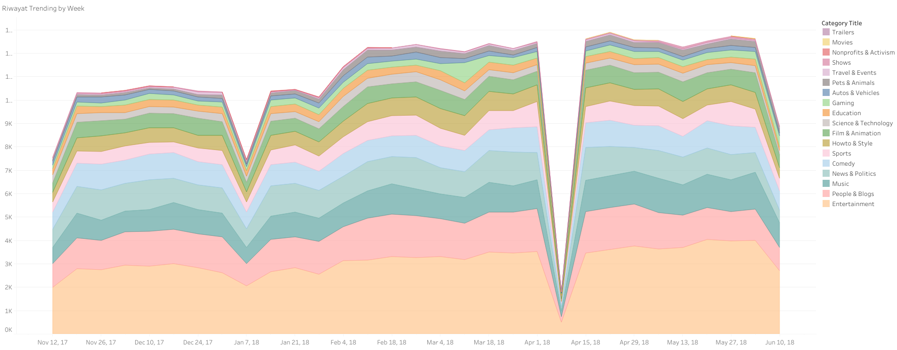
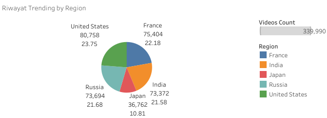
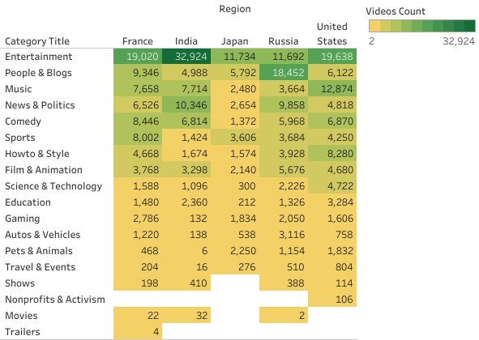
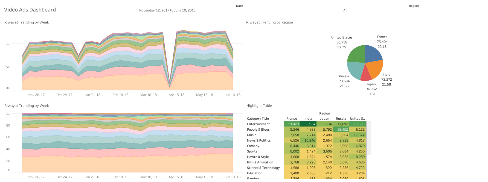

Visualization Trend Video with Tableau
1. Objective
Create a trend-by-week history visualization, this visualization will allow us to observe patterns, trends,
and fluctuations that occurred on a weekly basis.
Trend history by region, by collecting historical data for the chosen metric in each region over a certain
period,we can identify trends and patterns unique to each geographic area.
Highlight table by trend category, the highlight table will enable easy identification and comparison of
datapoints within each trend category, facilitating quick insights and analysis.
2. VISUALIZATION
Trend by Week

Trend by Region

Highlight Table

Dashboard

3. Conclusion
Based on weekly trends, the most categories are entertainment, music, people & blogs, comedy, and news & politics.
The largest distribution of video access is in the United States area, the difference with the area of France, Russia and
India is not so big. The lowest is from the Japan area.
The most popular category is entertainment equals France, India and Japan. But it's not like that in Russia, top popular
is people & blogs.